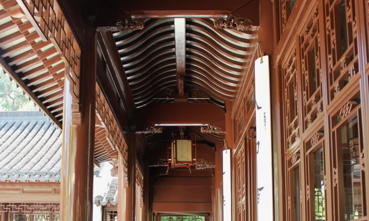

“Don't make something unless it is both necessary and useful. But if it is both necessary and useful—don't hesitate to make it beautiful.”
-Shaker Philosophy

Introduction
I’m Rachel Atmadja—a digital product designer with roots in architectural design.
I received my design education from the School of Architecture at Cal Poly San Luis Obispo. Upon graduation, I returned to Los Angeles and worked as an architectural designer—the venerable Los Angeles firm Koning Eizenberg Architecture was the last architectural studio I was a part of.
After six years of solving tectonic problems in building systems, I saw that the scale in which architecture operates is not well-suited to the design of personal experiences. The design of architectural spaces may influence and maybe even shape people's lives, but its creative outputs (magnificent buildings as they are) tend to be immutable and impersonal objects in the sense that there is no real dialogue between the created object and the person it shelters. Perhaps it is no accident that great architecture are often described as a beautiful, different kind of silence.
I found that the closest thing to a personal dialogue that humans can have with designed systems is in the realm of human-computer interaction, where a responsive digital system responds to something as personal as a touch of a finger or a human voice. I discovered that my systems-oriented approach to problem solving and ability to see granular levels of detail without losing sight of the big picture lend themselves particularly well to designing the behavior of responsive digital systems.
And so I shifted mediums—I entered into a full-time apprenticeship under a senior UX designer. I cut my teeth into digital product design, starting with the design of a meal-planning app from a plant-based perspective and a dashboard designed for remote collaboration.
I have been designing and building digital products ever since. It turns out I never really stopped building things after all.
Which buildings have you worked on?
I am proud to have worked alongside talented project teams on the Jasper Apartments at San Francisco, the U.S. Bank Minnesota Vikings Stadium, and the Naval Hospital Camp Pendleton.
What would you like to work on?
Designing experiences and building digital products that empower underserved and marginalized user groups is close to my heart.
I want to design and build products for people who are not accustomed to having their needs be heard—let alone have something designed to specifically address their needs. I believe that building products that serve the chronically underserved is a powerful way to dignify people’s experiences and remind them that they matter.
I am currently working on a navigation app to give persons of limited mobility more independence to navigate through public spaces.
Why are you a designer?
Growing up, I was mesmerized by the beauty and precision of systems.
More specifically, the way repetitive kits-of-parts can be combined in endless permutations to create different structures that serve specific purposes.
My brother told me that when we were kids, he distinctly remembered me pushing away Barbie dolls and reaching for the boxes of Lego’s.
My parents saw that I had an aptitude for building things and encouraged it. While most dads would buy their little daughters easy-bake ovens and stuffed animals, my dad bought me the lego set of a medieval fortress, complete with a drawbridge.
It came with the most beautiful construction manual I have ever seen: an exploded axonometric drawing of the castle where I could see how every single lego component combine to form the superstructure. It was perfectly rendered with the appropriate line weights to communicate depth and hierarchy to six-year-old me.
Ultimately, it was this fascination with beauty and utility that led me to choose architecture in college.
What do you do outside of work?
I still build things.
I sketched, prototyped, and constructed a line of table furniture inspired by architectural hardware pieces and other objects of industry. Also, the beauty of flowers calm my soul. On the weekends, you can find me taking photos at the Huntington Rose Garden or visiting the Los Angeles flower market. To put my floral design skills to good use, I arranged bridal bouquets for friends and took orders for mother’s day floral arrangements.